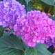
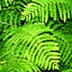

-
Eén- en tweejarigen
Een- en tweejarigen kunt u zelf zaaien. Deze planten bloeien vaak meer en langer dan vaste planten en brengen kleur en variatie.
-

Vaste planten
en kruiden De groep vaste planten omvat kruidachtige planten die geen houtige takken vormen.
Een groot deel van deze planten sterven in de winter bovengronds af, maar schieten elk jaar terug vanuit een overblijvend wortelstelsel.
- 
Bomen en
struiken Van oudsher is dit onze specialiteit. Bij ons vindt u dan ook een uitgelezen selectie van inheemse bomen en struiken ideaal voor alle 'echt' groen beplantingen.zoek tussen bomen en struiken
-
Klim- en
gevelplanten Een tuin kan niet zonder verticale accenten. Klimplanten zijn daarvoor de ideale versierders, ter verfraaiing van een muur, prieel of pergola of om een lelijk hekwerk aan het oog te onttrekken.
-
Water- en
vijverplanten Waterplanten noemen we vaak vijverplanten, ze zijn een absolute noodzaak om tot een biologisch evenwicht te komen!
- 
Schaduwplanten
Iedereen heeft één of meer schaduwplekken in zijn tuin. Ook daar voorzien we groen, of het nu een varen is of Kweetniadiewa superba, zelf een mostapijtje moet kunnen.